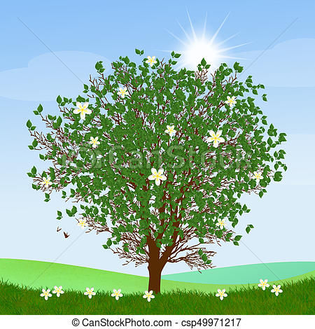

Verano
El verano o estío es una de las cuatro estaciones de las zonas templadas. Es la más cálida de ellas. Sigue a la primavera y precede al otoño. El verano se caracteriza porque los días son más largos y las noches más cortas
El verano o estío es una de las cuatro estaciones de las zonas templadas. Es la más cálida de ellas. Sigue a la primavera y precede al otoño. El verano se caracteriza porque los días son más largos y las noches más cortas
El invierno es una de las cuatro estaciones de las zonas templadas. Sigue al otoño y precede a la primavera. Esta estación se caracteriza por días más cortos, noches más largas y temperaturas más bajas a medida que nos alejamos del Ecuador.
El otoño es una de las cuatro estaciones del año y una de las cuatro de las zonas templadas. Sigue al verano y precede al invierno. Astronómicamente, comienza con el equinoccio de otoño y termina con el solsticio de invierno.
La primavera es una de las cuatro estaciones de las zonas templadas del planeta Tierra, sigue al invierno y precede al verano. La etimología de la palabra prima proviene de «primer» y vera de «verdor».